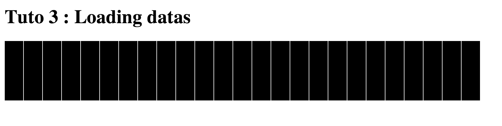
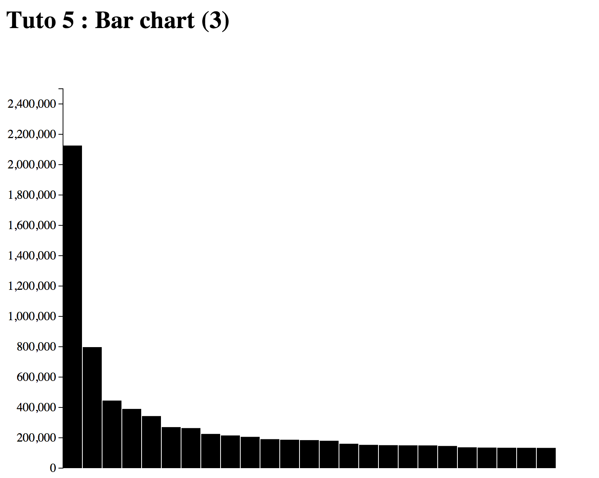
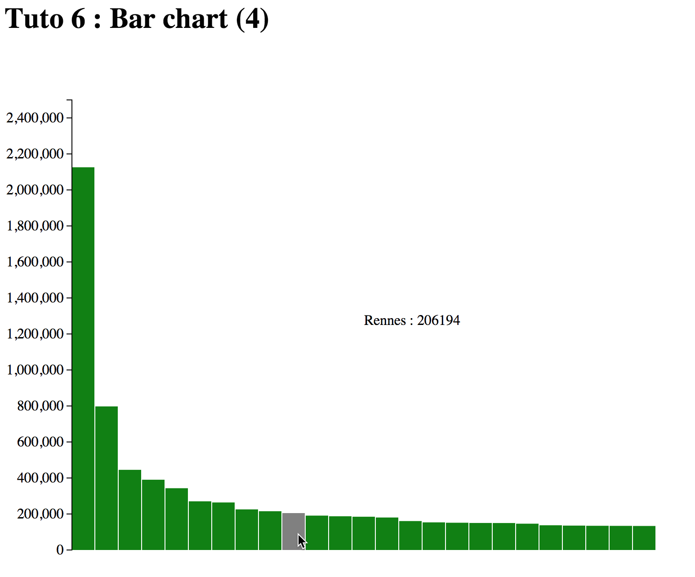

D3.js : the basics
Matthieu Simonin
https://github.com/msimonin/d3js-presentation
1. First steps
Minimal setup : how to d3 ?
- http://jsfiddle.net/
- http://jsbin.com/
- Offline with your favorite editor/browser
- Offline with your favorite editor/browser and a local web server
Official wiki : https://github.com/mbostock/d3/wiki
Setup
➤ tree
.
├── index.html
└── javascript
├── d3.js
└── d3.min.js
➤ cat index.html
<!DOCTYPE html>
<html lang="en">
<head>
<meta charset="utf-8">
<title>D3js</title>
<script type="text/javascript" src="javascript/d3.js"></script>
</head>
<body>
<script type="text/javascript">
// Javascript and D3js code here
</script>
</body>
</html>
D3.js from the browser console
DOM manipulations
key functions :
selection : d3.select('{selector}') / d3.selectAll('{selector}')
insertion : {selection}.append('tag')
attribute : {selection}.attr("attr", value)
style : {selection}.style("key", "value")
removal : {selection}.remove()
Tuto 1 : DOM manipulations
D3.js from the browser console
SVG manipulations
Same as before but with svg elements.
<svg height=500px width=500px>
<circle cx="100" cy="50" r="20" stroke="black" stroke-width="3" fill="red" opacity="0.5" >
<rect x="450" y="0" width="100" height="100" style="fill:blue;stroke:pink;stroke-width:1;opacity:1" />
<line x1="600" y1="100" x2="800" y2="50" style="stroke:rgb(255,120,50);stroke-width:5" />
</svg>
Transitions
Example
d3.select('circle')
.attr("r", "10px")
.transition()
.attr("r", "20px");
2. Loading datas
Load datas in memory
- Hard coded :
var data = [1,2,3];
// create visualization
d3.json("path/to/file.json", function(error, json) {
if (error) return console.warn(error);
data = json;
// create visualization
});
Tuto 2 : loading datas
Load datas from a local web servertutos ➤ python -m SimpleHTTPServer
Serving HTTP on 0.0.0.0 port 8000 ...
- then edit
tutos2/index.htmland loaddatas/villes_france.csv - see https://github.com/mbostock/d3/wiki/Arrays
- compute the population of France in 2010.
- filter the 25 most populated cities in France
3. Binding datas
Part 1. The update selection
<div class="container">
<div></div>
<div></div>
<div></div>
</div>
<script>
var myDatas = [1,2,3];
var container = d3.select('.container');
container.selectAll("div")
.data(myDatas);
</script>
 datas are bound through the __data__ property.
datas are bound through the __data__ property.
Using your datas : overview
Using your datas : how to
<div class="container">
<div></div>
<div></div>
<div></div>
</div>
<script>
var myDatas = [1,2,3];
var container = d3.select('container');
container.selectAll("div")
.data(myDatas)
.text(function(d, i) {
return i + ',' + d;
});
</script>

3. Binding datas
Part 2. The enter selection
Binding extra data elements : overview
Binding extra data elements : how to
<div class="container">
<div></div>
<div></div>
<div></div>
</div>
<script>
var myDatas = [1,2,3,4,5];
var container = d3.select(".container");
var updateSel = container.selectAll("div")
.data(myDatas);
//update existing div
updateSel.text(function(d, i) {
return i + ',' + d;
});
// add new divs
var newElements = updateSel.enter()
.append("div")
.text(function(d,i) {
return i + ',' + d;
});
</script>
3. Binding datas
Part 2 (bis). Binding from scratch
Binding from scratch : overview
Binding from scratch : how to
<div class="container">
</div>
<script>
var myDatas = [1,2,3];
var container = d3.select(".container");
container.selectAll("div")
.data(myDatas)
.enter()
.append("div")
.text(function(d,i) {
return i + ',' + d;
});
</script>
3. Binding datas
Sum up
{selection}.data(myDatas){selection}.data(myData).enter()Tuto 3 : creating a bar chart (1)
Bind each city of the tuto2 to a svg rect :
 svg rect : http://www.w3.org/TR/SVG/shapes.html#RectElement4. Scales
From the wiki :
Scales are functions that map from an input domain to an output range
Basic examples :
var linScale = d3.scale.linear().domain([0,1]).range([0,500]);
linScale(0.5); // return 250
var logScale = d3.scale.log().domain([1, Math.pow(10,6)]);
logScale(Math.pow(10,4)); // return 4
Tuto4 : creating a bar chart (2)
Map the population in 2010 to the height of the rect:

5. Axis
For a given scale, the d3 axis component generate all the svg elements needed to draw the axis (a line, ticks, numbers ...). (see wiki).
Basic example
var linScale=d3.scale.linear().domain([0,1]).range([0,500]);
var xAxis = d3.svg.axis().scale(linScale);
var svg = d3.select('body').append('svg').attr("width", 300).attr("height", 500);
//axis on the top of the screen
svg.append("g").attr("class","xAxis").call(xAxis);
//translate axis
svg.append("g")..attr("class","xAxis").attr("transform", "translate(0,100)").call(xAxis);
Tuto5 : creating a bar chart (3)
Add a left axis :
6. Interaction
Tuto6 : creating a bar chart (4)
Add some interaction to the bar chart.
Tuto 7 : creating a bubble chart
Create a bubble chart for all the cities in France with :
- The population in 2010 as xAxis
- The surface as yAxis